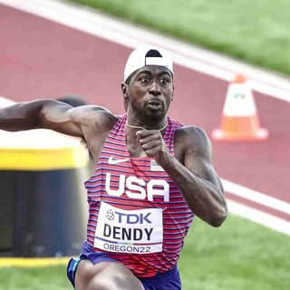
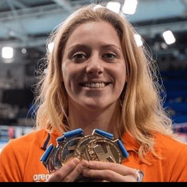
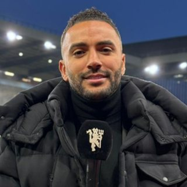
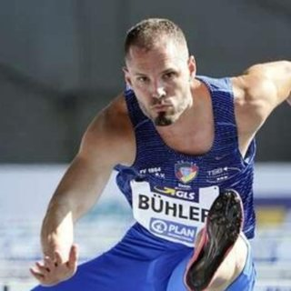
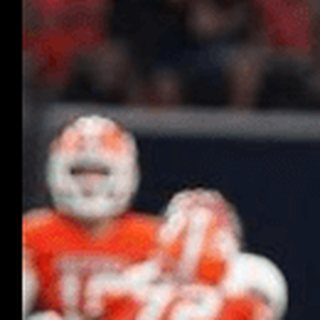
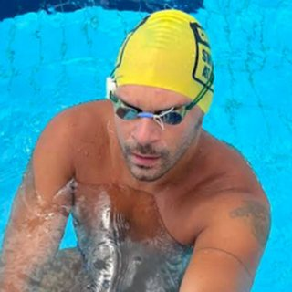

MD

Verifizierter Athlet
Marquis Dendy
US long jumper and sprinter competing on the international track and field circuit.
Der Kader
Sport Endorse vereint über 9.000 verifizierte Spitzenathleten und Creator aus über 280 Sportarten in mehr als 85 Ländern. Jedes Profil wird individuell verifiziert — Identität, sportliches Niveau und Audience — und zeigt Sportart, Standort, Reichweite, Engagement und Partnerschafts-Schwerpunkte, die Marken für eine sichere Vorauswahl brauchen. Unten: eine Auswahl verifizierter Athleten im Format der Live-Plattform.
Ausgewählte Athleten
Eine Auswahl verifizierter Athleten auf Sport Endorse, so wie Marken sie sehen. Der vollständige Kader ist in der Plattform durchsuchbar.

US long jumper and sprinter competing on the international track and field circuit.
Professional rugby union winger and Ireland international known for his attacking play.

Dutch international swimmer and backstroke specialist competing on the world stage.

English footballer with a long career across the Premier League and Football League.
English professional golfer competing on the Ladies European Tour.

German international sprint hurdler with major-championship experience.

US professional footballer building his profile on and off the pitch.

Austrian ice and open-water swimmer competing in extreme-endurance events.
FAQ
Ja — dies ist eine Auswahl verifizierter Athleten auf Sport Endorse. Die vollständige Plattform umfasst über 9.000 einzeln verifizierte Athleten und Creator in über 280 Sportarten; Marken durchsuchen den kompletten Kader nach einer Demo oder einem Abo.
Jeder Athlet wird vor der Aufnahme individuell verifiziert: Identität, sportliches Niveau und verknüpfte Social-Audiences werden geprüft — Marken verhandeln nie mit unverifizierten Profilen oder aufgeblähten Follower-Zahlen.
Ja. Marken filtern über 9.000 verifizierte Athleten nach Sportart (280+ abgedeckt), Standort (85+ Länder), Reichweite, Engagement und Kampagnen-Fit — oder veröffentlichen ein Briefing und lassen passende Athleten sich direkt bewerben.
Eine 20-minütige Demo zeigt Ihnen Live-Suche, Briefings und Reporting mit Athleten, die zu Ihrer Marke passen.
Demo buchen